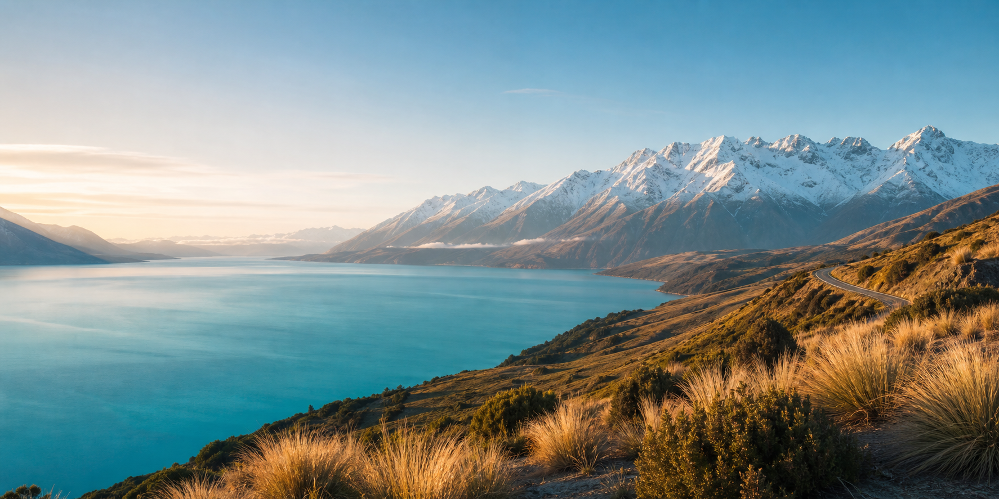

南阿尔卑斯山脉
雪峰、冰川、湖泊和草坡交替出现，车窗外就是连续不断的电影画面。

Why New Zealand
雪峰、冰川、湖泊和草坡交替出现，车窗外就是连续不断的电影画面。
乘船进入米尔福德峡湾，在雨林、瀑布和海雾之间感受世界尽头的辽阔。
北岛的火山地貌、温泉与洞穴星河，让自然景观多了一层奇妙的想象力。
Signature Route
节奏舒适，不赶景点。每天保留足够停留时间，适合第一次到访新西兰， 也适合想把照片、徒步和美食都安排好的旅行者。
城市海湾、萤火虫洞、毛利文化晚宴与地热公园，开启北岛自然序章。
穿过坎特伯雷平原，在星空保护区和雪山步道之间慢慢靠近南岛。
湖边小镇、酒庄午餐、缆车观景和自由活动，把度假感留给自己。
峡湾游船、山谷公路与返程整理，让旅程在最壮阔的风景中收束。
Included Moments
我们把热门目的地和容易错过的小众停靠点重新编排，让行程既有标志性风景， 也有属于你自己的安静时刻。
避开高峰时段，靠近瀑布、雨林和海湾深处的静谧水面。
在暗夜保护区等待银河升起，配备保暖安排与拍摄建议。
可选酒庄、喷射快艇、轻徒步或只是坐在湖边喝一杯咖啡。
安排羊排、青口贝、海鲜与酒庄午餐，让风景之外也有记忆点。
Best Time
鲁冰花与雪山同框，气候清爽，适合摄影和轻徒步。
日照时间长，湖区活动丰富，是亲友出游和公路旅行的高光季。
金色山谷、酒庄丰收、游客密度下降，适合更松弛的深度旅行。
皇后镇滑雪季开启，雪山层次更强，适合冰雪和温泉组合。
Start Your Journey
留下你的出发时间、人数和偏好，我们将为你整理一份专属新西兰旅行方案。